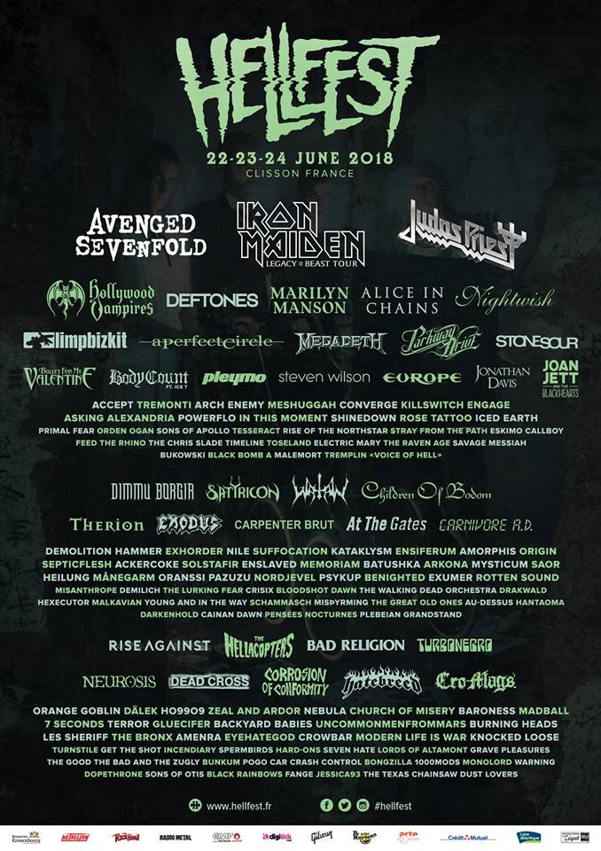

Hellefest 2018
La organización del festival francés Hellfest 2018 ha desvelado su cartel, por lo que finalmente podemos conocer a todas las bandas (más de 150) que se darán cita en Clisson, los días 22, 23 y 24 de junio de 2018.
El evento, que agotó las entradas, tendrá como cabezas de cartel a AVENGED SEVENFOLD, IRON MAIDEN y JUDAS PRIEST. Otros grupos destacados son NIGHTWISH, MEGADETH, HOLLYWOOD VAMPIRES (con Johnny Depp, Joe Perry, Alice cooper y Matt Sorum), LIMP BIZKIT, STONE SOUR, MARILYN MANSON, DEFTONES, A PERFECT CIRCLE, DIMMU BORGIR, CHILDREN OF BODOM, ACCEPT, EUROPE, BULLET FOR MY VALENTINE y THERION.
Lista de bandas de Hellfest 2018
IRON MAIDEN
AVENGED SEVENFOLD
JUDAS PRIEST
HOLLYWOOD VAMPIRE
LIMP BIZKIT
MARILYN MANSON
ALICE IN CHAINS
NIGHTWISH
A PERFECT CIRCLE
DEFTONES
MEGADETH
PARKWAT DRIVE
STONE SOUR
BULLET FOR MY VALENTINE
BODY COUNT (feat Ice T)
PLEYMO
STEVEN WILSON
EUROPE
ACCEPT
JOAN JETT AND THE BLACK HEARTS
JONATHAN DAVES
TREMONTI
ARCH ENEMY
MESHUGGAH
CONVERGE
KILLSWITCH ENGAGE
ASKING ALEXANDRIA
POWEFLO
IN THIS MOMENT
SHINEDOWN
ROSE TATTOO
ICED EARTH
PRIMAL FEAR
ORDEN OGAN
SONS OF APPOLO
TESSERACT
RISE OF THE NORTHSTAR
STRAY FORM THE PATH
ESKIMO CALLBOY
FEED THE RHINO
THE CHRIS SLADE TIMELINE
TOSELAND
ELECTRIC MARY
THE RAVEN AGE
SAVAGE MESSIAH
BUKOWSKI
BLACK BOMB
A MALEMORT
TREMPLIN
VOICE OF HELL
DIMMU BORGIR
SATYRICON
WATAIN
CHILDREN OF BODOM
THERION
EXODUS
CARPENTER BRUT
AT THE GATES
CARNIVORE A.D.
DOMILITION HAMMER
EXHORDER
NILE
SUFFOCATION
KATAKLYSM
ORIGIN
AMORPHIS
MEMORIAM
ACKERCOKE
ENSIFERUM
SOLSTAFIR
ENSLAVED
SEPTICFLESH
BATUSHKA
ARKONA
MYSTICUM
SAOR
HEILUNG
MANEGARM
ORANSSI
PAZUZU
NORDJEVEL
PSYKUP
BENIGHTED
EXUMER
ROTTEN SOUND
MISANTHROPE
DEMILICH
THE LURKING FEAR
CRISIX
BLOODSHOT DAWN
THE WALKING DEAD ORCHESTRA
DRAKWALD
HEXECUTOR
MALKAVIAN
YOUNG AND IN THE WAY
SCHAMMASCH
MISPYRMING
THE GREAT OLD ONES
AU-DESSUS
HANTAOMA
DARKENHOLD
CAINAN DAWN
PENSÉES NOCTURNES
PLEBEIAN GRANDSTAND
RISE AGAINST
THE HELLACOPTERS
BAD RELIGION
TURBONEGRO
NEUROSIS
DEAD CROSS
AMENRA
HATEBREED
CRO-MAGS
ORANGE GOBLING
DÁLEK
H09909
ZEAL ARDOR
NEBULA
CHRCH OF MISERY
BARONESS
MADBALL
7 SECONDS
TERROR
GLUECIFER
BACKYARD BABIES
UNCOMMONMENFROMMARS
BURNING HEADS
LES SHERIFF
THE BRONX
CORROSION OF CONFORMITY
EYEHATEGOD
CROWBAR
MODERN LIFE IS WAR
KNOCKED LOOSE
TURNSTILE
GET THE SHOT INCENDIARY
SPERMBIRDS
HARD-ONS
SEVEN HATE
LORDS OF ALTEMONT
THE GOOD THE BAD AN THE ZUGLY
BUNKIM
POGO CAR
CRASH CONTROL
GRAVE PLEASURES
BONGZILLA
1000MODS
MONOLORD
WARNING
DOPETHRONE
SONS OF OTIS
BLACK RAINBOWS
FANGE
JESSICA93
THE TEXAS CHAINSAWv
DUST LOVERS
Hellfest 2018 tendrá lugar de nuevo en la localidad francesa de Clisson, los días 22, 23 y 24 de junio de 2018.